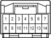

Name
A/T Shift Lever Illumination , Shift Lock Control ECU
Code
A60
Part Number
90980-11911
Color
White
Spec

Location
Position of Parts in Instrument Panel (LHD) 1
Position of Parts in Instrument Panel (RHD) 1
System
ECT and A/T Indicator (LHD 1HD-FTE)
ECT and A/T Indicator (LHD 2UZ-FE)
ECT and A/T Indicator (RHD 1HD-FTE)
ECT and A/T Indicator (RHD 2UZ-FE)
Illumination (LHD)
Illumination (RHD)
Shift Lock (LHD)
Shift Lock (RHD)